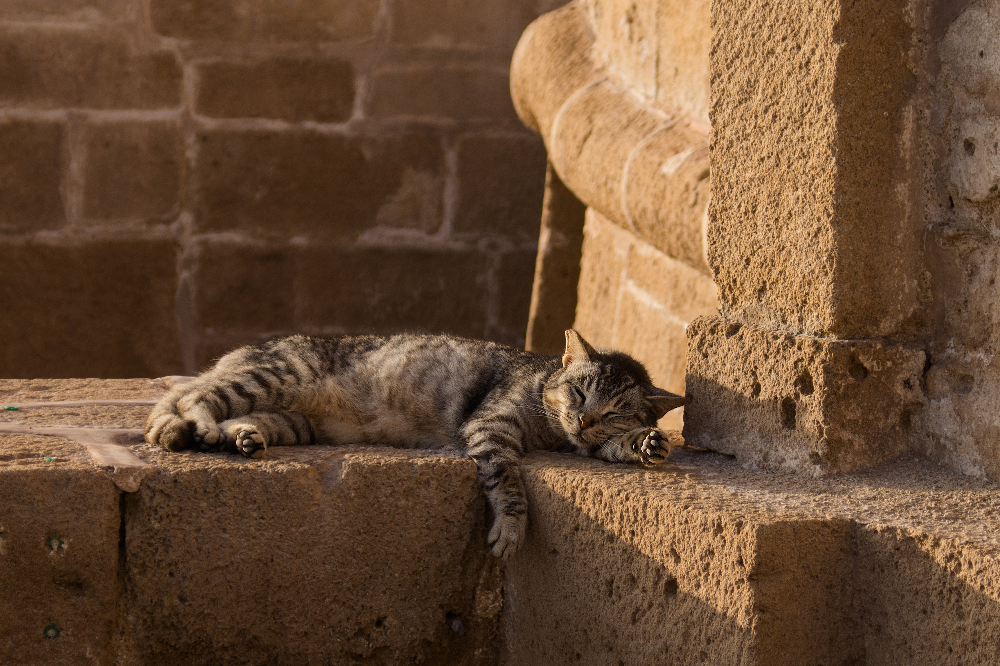
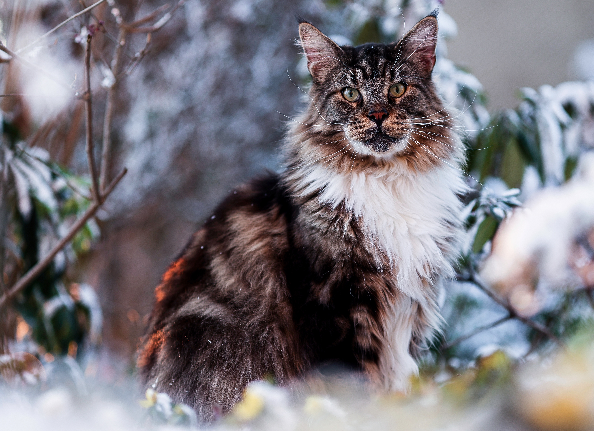
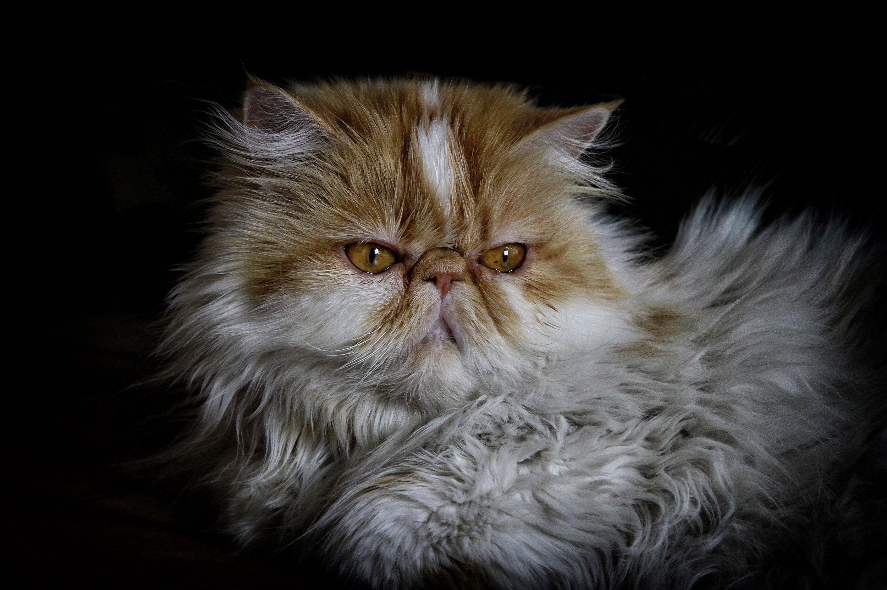
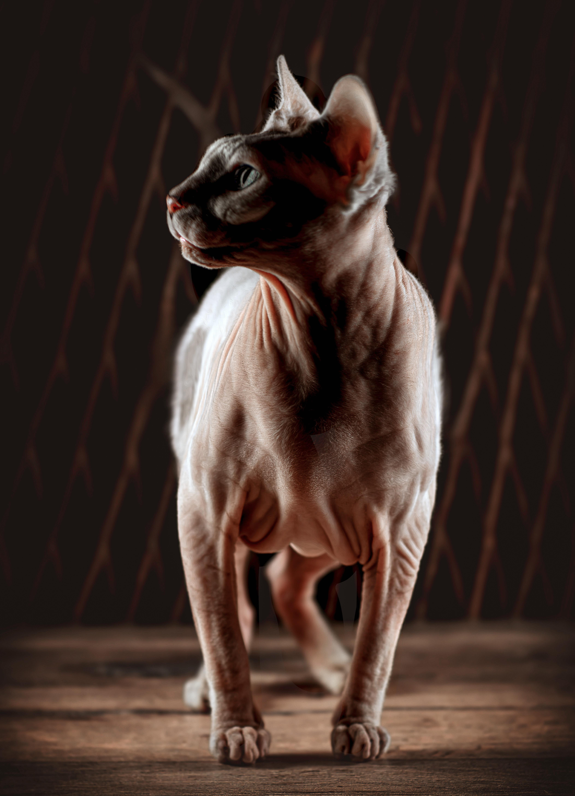

Bienvenue dans le chatverse
Découvrez de différentes choses sur le chatverse, ou plus facilement, les chats.

Les différentes races de chats
Il existe de nombreuses races de chats, parmi lesquelles :
- Les Maine coon, la plus grand race de chats.
- Les Sphynx, étant connu car c'est des chats "moches", car ils n'ont pas de poils.
- Les Persian, étant également des chats "moches" à cause de leur gueule.
Les taille des chats selon les races :
-

Les Maine coon
faisant entre 97-100cm avec 5-10kg.
-

Les Persian
faisant 20-38cm avec 3-7kg.
-

Les Sphynx
faisant 20-25cm avec 3-5,5kg.